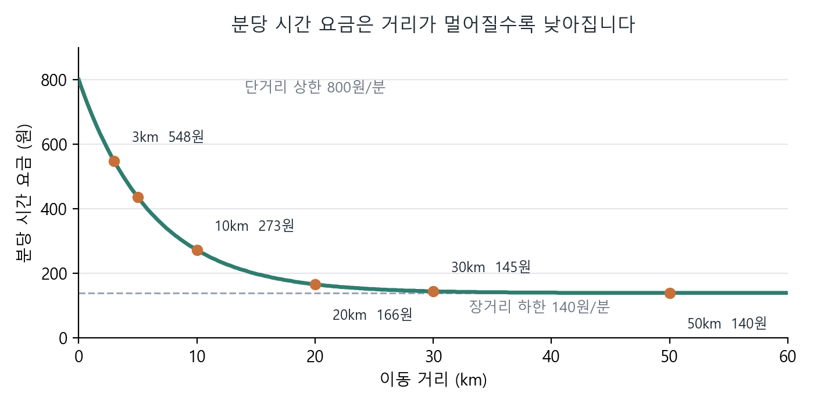
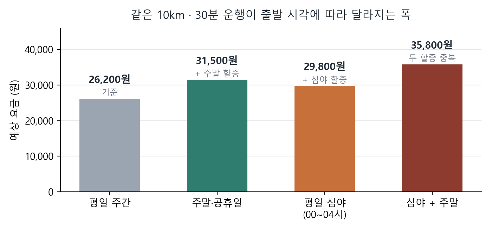
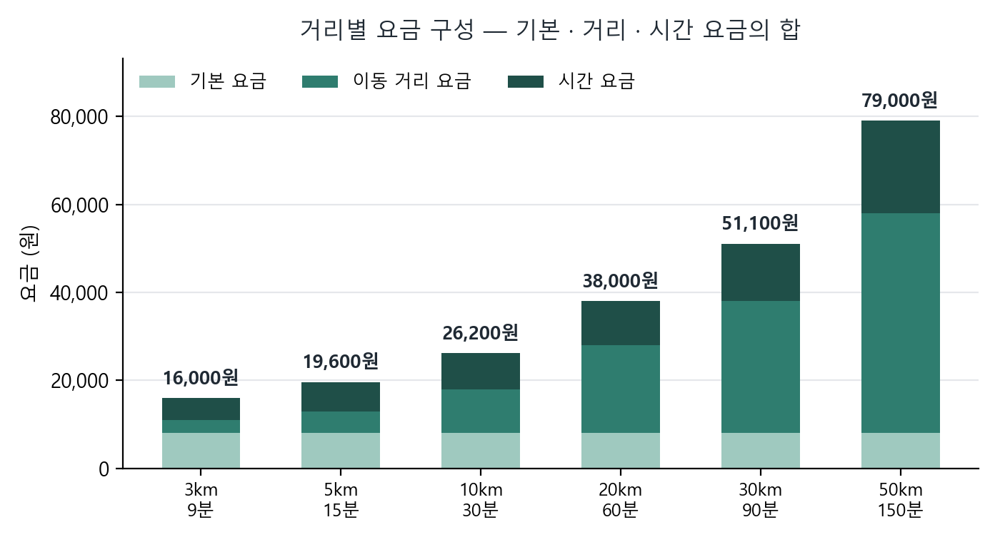

요금표와 요금 계산 방식
네발손님의 요금은 ① 기본 요금 + ② 이동 거리 요금 + ③ 시간 요금 세 가지로 이루어집니다. 여기에 해당하는 경우에만 할증(심야·주말공휴일·대형차·반려동물 추가요금)과 통행료·대기 요금이 더해지고, 쿠폰·마일리지 할인이 빠집니다.
이 문서의 금액은 모두 원(KRW)이며, 표시 금액이 실제 청구 금액입니다.
요금표
| 항목 | 금액 | 적용 방식 |
|---|---|---|
| 기본 요금 | 8,000원 | 운행 1건당 1회 |
| 이동 거리 요금 | 1,000원 / km | 실제 주행 경로 거리에 비례 |
| 시간 요금 | 140 ~ 800원 / 분 | 소요 시간에 비례. 분당 단가는 거리가 멀수록 낮아집니다 (자세히) |
| 심야 할증 | 기본 요금 + 거리 요금의 20% | 00:00 ~ 04:00 에 걸친 시간만큼 비례 적용 (자세히) |
| 주말·공휴일 할증 | 운행 요금의 20% | 출발일이 토·일요일 또는 법정 공휴일일 때 (자세히) |
| 대형차(밴) 할증 | 이동 거리(km) × 분당 시간 요금 | 대형 차량을 선택한 운행에만 |
| 반려동물 추가요금 | 3점 초과분 1점당 2,000원 | 크기 점수의 합이 3점을 넘을 때만 (자세히) |
| 통행료 | 실비 | 경로상 유료도로 통행료가 있을 때만 |
| 대기 요금 · 초과 대기 요금 | 10분당 3,000원 | 무료 대기 또는 예약 시 지정한 대기시간을 넘긴 시간에 (자세히) |
| 호출료 · 예약 수수료 | 없음 | 별도로 받지 않습니다 |
모든 항목은 100원 단위로 올림해 계산합니다.
요금 계산 공식
총 요금은 다음 한 줄로 결정됩니다.
총 요금 = 기본 요금 + 거리 요금 + 시간 요금 + 추가·할증 + 주말·공휴일 할증 + 통행료 + 대기 요금 − 할인
| 항목 | 계산식 |
|---|---|
| ① 기본 요금 | 8,000원 (고정) |
| ② 거리 요금 | 이동 거리(km) × 1,000원 |
| ③ 시간 요금 | 소요 시간(분) × 분당 시간 요금 — 분당 단가는 3장 |
| ④ 추가·할증 | 대형차 할증 + 심야 할증 + 반려동물 추가요금 의 합계 |
| ⑤ 주말·공휴일 할증 | (① + ② + ③ + ④) × 20% |
| ⑥ 통행료 | 경로상 유료도로 실비 |
| ⑦ 대기 요금 | 무료 대기 또는 지정 대기시간을 넘긴 시간 × 10분당 3,000원 |
| ⑧ 할인 | 보유한 쿠폰·마일리지를 사용한 금액 |
계산 순서와 올림 규칙
- ① ~ ④ 를 각각 100원 단위로 올림한 뒤 더합니다.
- ⑤ 주말·공휴일 할증은 올림을 마친 ①+②+③+④ 합계에 20%를 적용하고, 그 결과도 100원 단위로 올립니다. 통행료와 대기 요금은 할증 대상에 들어가지 않습니다.
- ⑥ 통행료와 ⑦ 대기 요금을 더한 다음 ⑧ 할인을 뺍니다. 할인은 통행료·대기 요금까지 포함한 금액에서 차감됩니다.
- 이 순서로 계산하기 때문에 영수증의 항목을 모두 더하면 청구 금액과 정확히 일치합니다.
이동 거리와 소요 시간은 T맵 실시간 경로 안내에서 받아온 값을 사용합니다. 출발 시각이 미래인 예약은 그 시각의 예상 소요 시간으로 계산합니다.
시간 요금 — 분당 단가가 거리에 따라 달라집니다
가까운 거리일수록 승·하차와 준비에 드는 품이 상대적으로 크기 때문에 분당 단가를 높게 두고, 거리가 멀어질수록 단가를 낮춰 장거리 요금이 과도하게 커지지 않도록 설계했습니다.
분당 시간 요금 = (800 − 140) × e(−0.16 × 거리) + 140 거리 = 이동 거리(km) · e = 자연상수(약 2.718) · 원 단위 미만 절사
거리가 0에 가까우면 800원/분에서 출발해, 거리가 멀어질수록 140원/분으로 수렴합니다.

| 이동 거리 | 3km | 5km | 10km | 20km | 30km | 50km |
|---|---|---|---|---|---|---|
| 분당 시간 요금 | 548원 | 436원 | 273원 | 166원 | 145원 | 140원 |
할증
4-1. 심야 할증 — 00:00 ~ 04:00
운행 시간 중 심야 시간대(00:00 ~ 04:00)에 걸친 만큼만 비례해서 붙습니다. 심야에 10분만 걸쳤다면 10분치만 할증됩니다.
심야 할증 = (기본 요금 + 거리 요금) × 20% × 심야 구간 비율 심야 구간 비율 = 00:00~04:00 에 걸친 시간 ÷ 전체 소요 시간 (0 ~ 1)
- 예) 01:00 출발, 10km · 30분 운행 → 전 구간이 심야 → 비율 1.0 → (8,000 + 10,000) × 20% = 3,600원
- 예) 03:50 출발, 10km · 30분 운행 → 심야 10분 / 전체 30분 → 비율 0.33 → 1,200원
4-2. 주말·공휴일 할증 — 20%
출발일이 토요일·일요일이거나 관공서 공휴일에 관한 규정에 따른 법정 공휴일(대체공휴일 포함)이면 운행 요금의 20%가 더해집니다.
주말·공휴일 할증 = (기본 + 거리 + 시간 + 추가·할증) × 20%
- 판정은 출발일 하루만 봅니다. 운행이 자정을 넘겨 다음 날 끝나더라도 출발일 기준으로 한 번만 판정합니다.
- 통행료와 대기 요금은 할증 대상이 아닙니다.
- 심야 할증과 주말·공휴일 할증은 함께 적용될 수 있습니다. 이때 주말 할증은 심야 할증까지 더해진 금액을 기준으로 계산됩니다.
- 영수증에는 “주말 할증 (20% · 토요일)” 처럼 할증율과 사유가 그대로 표시됩니다.

그 밖에 붙을 수 있는 요금
5-1. 대형차(밴) 할증
대형 차량이 필요한 운행에만 붙습니다.
대형차 할증 = 이동 거리(km) × 그 운행의 분당 시간 요금 예) 10km · 분당 273원 → 10 × 273 = 2,730원 → 2,800원(100원 올림)
5-2. 반려동물 추가요금
함께 타는 반려동물의 크기를 점수로 환산해 합산합니다. 합산 점수 3점까지는 추가요금이 없고, 3점을 넘는 점수에만 1점당 2,000원이 붙습니다. 크기는 몸무게로 구분합니다.
| 크기 | 몸무게 | 점수 |
|---|---|---|
| 소형 | 7kg 미만 | 1점 |
| 중형 | 7kg 이상 15kg 미만 | 2점 |
| 대형 | 15kg 이상 | 3점 |
반려동물 추가요금 = (크기 점수 합계 − 3) × 2,000원 점수 합계가 3점 이하면 0원
| 탑승 반려동물 | 점수 합계 | 초과 점수 | 추가요금 |
|---|---|---|---|
| 소형 1마리 | 1점 | - | 0원 |
| 소형 3마리 | 3점 | - | 0원 |
| 소형 4마리 | 4점 | 1점 | 2,000원 |
| 중형 2마리 | 4점 | 1점 | 2,000원 |
| 대형 1마리 | 3점 | - | 0원 |
| 대형 1마리 + 소형 1마리 | 4점 | 1점 | 2,000원 |
| 대형 2마리 | 6점 | 3점 | 6,000원 |
몸무게는 예약할 때 입력한 값을 기준으로 하며, 실제와 크게 다르면 기사 확인 후 조정될 수 있습니다.
5-3. 통행료
경로상 유료도로 통행료가 있으면 실비로 더해집니다. 할증 계산에는 들어가지 않고, 할인 계산에는 포함됩니다.
5-4. 대기 요금과 초과 대기 요금
기사가 사람이나 반려동물을 기다리는 시간에 붙는 요금입니다. 단가는 두 경우 모두 같습니다.
대기 요금 = 대기 시간 ÷ 10분(올림) × 3,000원
(가) 보호자가 동승하지 않는 단독 운송
보호자가 함께 타지 않는 운송은 출발지와 도착지에서 사람을 기다리는 시간이 생깁니다. 아래 무료 대기 시간까지는 요금이 붙지 않고, 넘긴 시간에만 초과 대기 요금이 붙습니다.
| 구분 | 무료 대기 | 초과 시 |
|---|---|---|
| 출발지 픽업 | 10분 | 10분당 3,000원 |
| 도착지 인계 | 15분 | 10분당 3,000원 |
(나) 동물병원 방문 등 대기가 예정된 왕복 운행
동물병원에 들렀다가 다시 돌아오는 운행처럼 목적지에서 기다려야 하는 예약은, 예약할 때 필요한 대기시간을 직접 지정합니다. 지정한 시간만큼의 대기 요금이 결제 금액에 미리 포함되고, 실제 대기가 그 시간을 넘기면 넘긴 만큼만 초과 대기 요금으로 더해집니다.
- 지정한 대기시간보다 일찍 끝나더라도 차액은 환불되지 않습니다. 기사는 그 시간을 비워 두고 다음 운행 일정을 잡기 때문에, 예약할 때 지정한 시간은 이미 사용한 시간으로 봅니다.
- 초과분도 10분 단위로 올림해 계산합니다. 5분을 넘겼더라도 1단위(3,000원)가 붙습니다.
- 예) 대기시간 60분 지정 → 선결제에 대기 요금 18,000원 포함. 실제 75분 대기 → 초과 15분 → 2단위 → 6,000원 추가 청구
두 경우 모두 운행이 끝난 뒤 금액이 확정되며, 영수증에 “초과 대기 요금 (20분 · 병원 대기 20분 초과)” 처럼 사유와 함께 표시됩니다. 도착지에서 인계가 되지 않아 출발지로 되돌아가는 경우의 기준은 운영정책 제4조(노쇼와 대기 요금)를 따릅니다.
거리별 예상 요금 (평일 주간 기준)
아래는 할증·통행료·대기 요금·할인이 없는 평일 주간 운행의 예시입니다. 소요 시간은 도심 평균 속도(1km당 3분)로 가정했으며, 실제로는 T맵 실시간 경로의 소요 시간으로 계산됩니다.
| 이동 거리 | 소요 시간 | 기본 요금 | 거리 요금 | 시간 요금 | 예상 요금 |
|---|---|---|---|---|---|
| 3km | 9분 | 8,000 | 3,000 | 5,000 | 16,000 |
| 5km | 15분 | 8,000 | 5,000 | 6,600 | 19,600 |
| 10km | 30분 | 8,000 | 10,000 | 8,200 | 26,200 |
| 20km | 60분 | 8,000 | 20,000 | 10,000 | 38,000 |
| 30km | 90분 | 8,000 | 30,000 | 13,100 | 51,100 |
| 50km | 150분 | 8,000 | 50,000 | 21,000 | 79,000 |

계산 예시 — 10km · 30분 운행
같은 운행을 네 가지 조건으로 계산해 보면 다음과 같습니다. 분당 시간 요금은 10km 기준 273원입니다.
예시 ① 평일 낮 14:00 출발
| 항목 | 금액 | 계산 |
|---|---|---|
| 기본 요금 | 8,000 | 고정 |
| 이동 거리 요금 | 10,000 | 10km × 1,000원 |
| 시간 요금 | 8,200 | 30분 × 273원 = 8,190 → 올림 |
| 합계 | 26,200원 |
예시 ② 토요일 낮 14:00 출발
| 항목 | 금액 | 계산 |
|---|---|---|
| 기본 + 거리 + 시간 요금 | 26,200 | 예시 ①과 동일 |
| 주말 할증 (20% · 토요일) | 5,300 | 26,200 × 20% = 5,240 → 올림 |
| 합계 | 31,500원 |
예시 ③ 평일 새벽 01:00 출발 (전 구간 심야)
| 항목 | 금액 | 계산 |
|---|---|---|
| 기본 + 거리 + 시간 요금 | 26,200 | 예시 ①과 동일 |
| 심야 할증 | 3,600 | (8,000 + 10,000) × 20% × 1.0 |
| 합계 | 29,800원 |
예시 ④ 평일 낮 14:00 출발 · 대형견 2마리 · 동물병원 대기 60분 지정
| 항목 | 금액 | 계산 |
|---|---|---|
| 기본 + 거리 + 시간 요금 | 26,200 | 예시 ①과 동일 |
| 반려동물 추가요금 | 6,000 | 대형 2마리 = 6점 → 초과 3점 × 2,000원 |
| 대기 요금 (60분) | 18,000 | 60분 ÷ 10분 = 6단위 × 3,000원 |
| 합계 (선결제) | 50,200원 |
예시 ④에서 실제 대기가 75분이 되면 초과 15분에 2단위(6,000원)가 더해져 최종 56,200원이 됩니다. 토요일 새벽 01:00 출발처럼 두 할증이 겹치면, 주말 할증은 심야 할증까지 더해진 29,800원을 기준으로 계산되어 6,000원이 붙고 합계는 35,800원이 됩니다.
할인 — 쿠폰과 마일리지
- 쿠폰과 마일리지는 통행료·대기 요금까지 모두 더한 최종 금액에서 차감됩니다.
- 할인 후 금액이 0원보다 작아지지는 않습니다.
- 영수증에는 “할인” 항목으로 사용 내역과 함께 표시됩니다.
알아두실 점
- 예약할 때 보이는 금액은 실제 경로의 거리·소요 시간을 바탕으로 계산한 예상 금액입니다.
- 예약 내용을 수정해 거리·시간·출발 시각·대기시간이 바뀌면 요금도 다시 계산됩니다.
- 이미 결제한 금액이 올라가면 앱에서 추가 결제를 안내합니다.
- 예약 취소에 따른 수수료는 이 문서가 아니라 운영정책 제3조(취소와 수수료)를 따릅니다.
- 요금표가 바뀌면 적용일 전에 홈페이지에 다시 게재합니다. 이미 확정된 예약은 확정 당시의 요금이 그대로 유지됩니다.